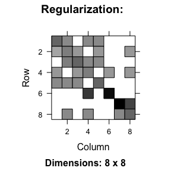
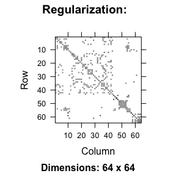
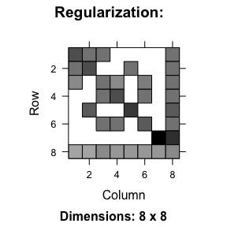
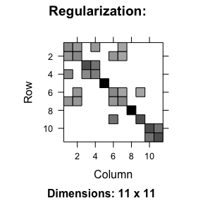
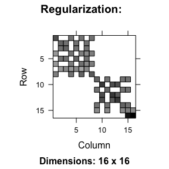
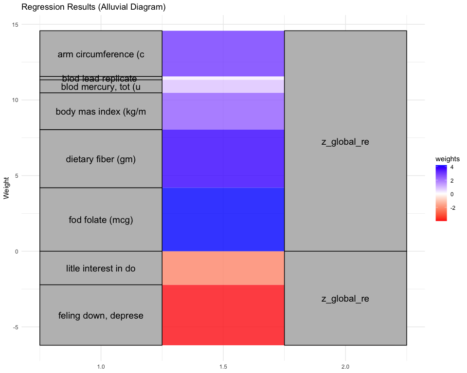
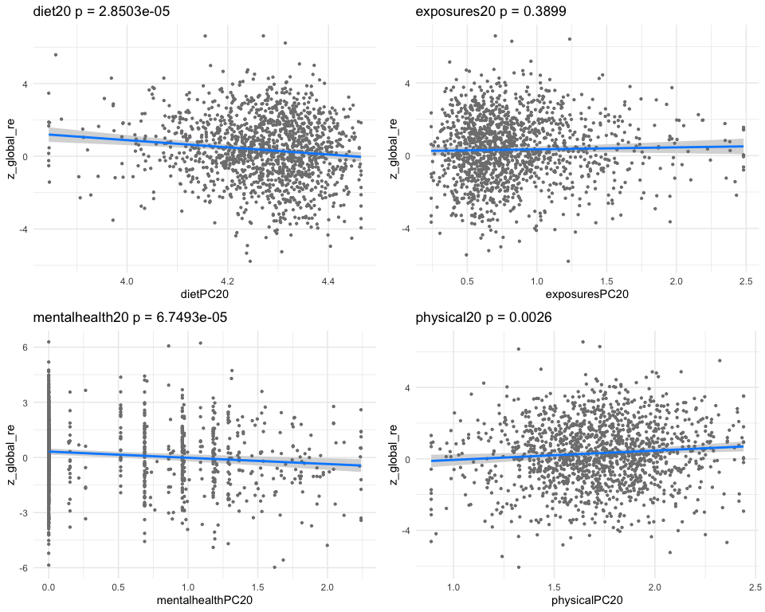
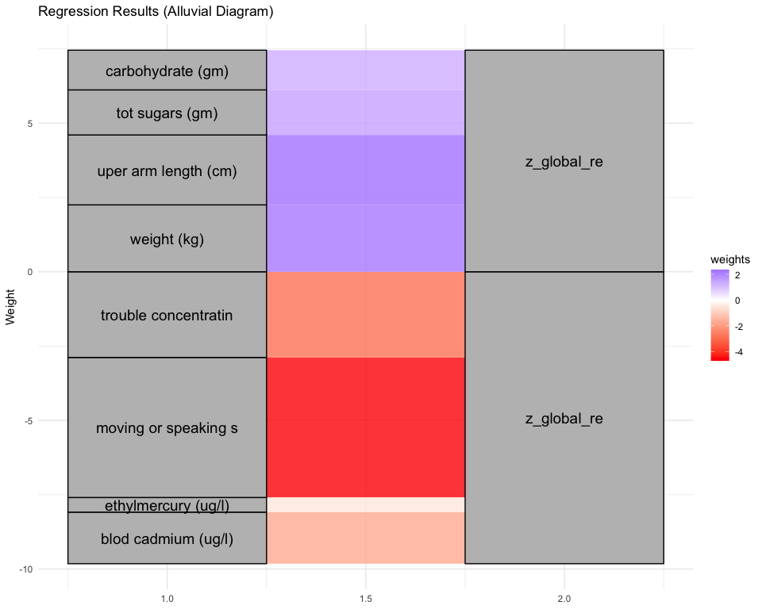
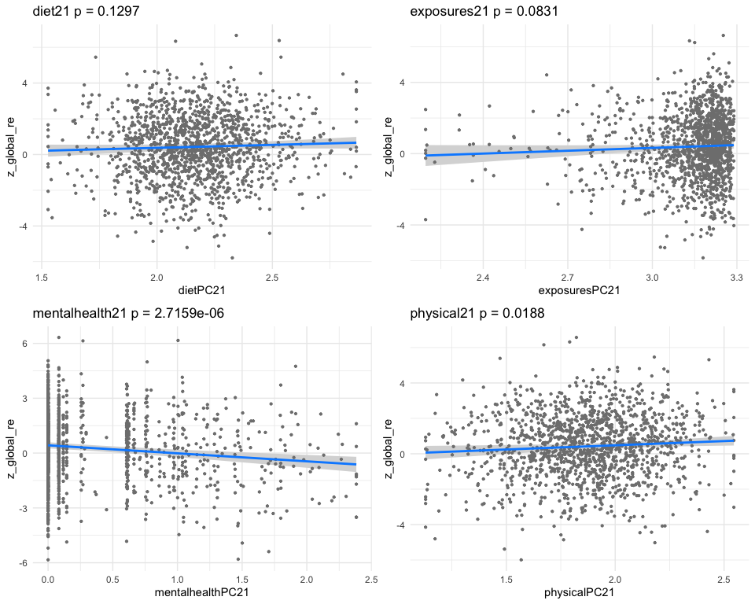

Integrative Analysis of NHANES Data Using Similarity-Driven Multi-View Learning (SiMLR) for Cognitive Health Prediction
Source:vignettes/simlr_nhanes.Rmd
simlr_nhanes.RmdIntroduction
Cognitive decline and disorders such as dementia and mild cognitive impairment (MCI) are influenced by a variety of factors, including demographic, dietary, physical, mental, and environmental components (Livingston et al., 2020). Traditional statistical approaches often analyze these factors in isolation, potentially missing key interactions between predictors that jointly contribute to cognitive outcomes (James et al., 2013). Machine learning and data-driven dimensionality reduction methods provide a means to integrate multimodal data for improved prediction accuracy (Kline et al. 2022).
Similarity-driven Multi-view Linear Reconstruction (or learning) (SiMLR) is a novel approach designed to extract a unified low-dimensional representation from heterogeneous data sources (Avants et al., 2022). Unlike conventional factor analysis or principal component analysis (PCA), SiMLR preserves local relationships within each data modality while optimizing joint structure across multiple sources. This study applies SiMLR to the National Health and Nutrition Examination Survey (NHANES) dataset to assess whether a joint representation of demographic, dietary, physical health, mental health, and environmental factors can enhance the prediction of cognitive outcomes.
Methods
Data and preprocessing
Data were obtained from NHANES, a
nationally representative dataset containing health and nutritional
information for the U.S. population. The nhanesA package in
R was used to retrieve and merge multiple datasets, ensuring consistency
in subject selection. Data modalities included:
Demographics (age, sex, educational attainment)
Dietary intake (nutrient consumption, caloric intake)
Physical health (blood pressure, body mass index)
Mental health (Patient Health Questionnaire-9 scores)
Environmental exposure (metals and toxin levels)
Subjects with missing data exceeding a given % of their total feature set were excluded to ensure robustness in model training. Continuous variables were normalized to a standard scale, and categorical variables were one-hot encoded. Half-percent winsorization was applied before regression to further limit the impact of outlying data points.
SiMLR Implementation
These are combined into SiMLR for an unsupervised dimensionality reduction. The resulting low-dimensional representations are used for joint prediction of cognitive outcomes. Over 2000 subjects with these measurements are available along with environmental exposures in a large majority of these ( 1400).
SiMLR was applied to the combined dataset to generate a low-dimensional representation of the subjects. The method preserves structure within each domain while optimizing for cross-domain similarity, ensuring that interdependencies between different health factors are retained. This representation was then used as input for a cognitive outcome prediction model, where cognitive scores were derived from standardized NHANES cognitive tests.
We predict the variable z_digit_re in NHANES which
refers to the Digit Symbol Substitution Test (DSST), a cognitive
assessment tool. The DSST evaluates processing speed, sustained
attention, and working memory by requiring participants to match symbols
with corresponding numbers under time constraints. The predictive
performance of SiMLR embeddings was compared to individual domain-based
models using mean squared error (MSE) and R-squared (ℓ²) statistics.
Discussion
SiMLR identifies predictors from diet, physical measurements, environmental exposures and mental health that jointly relate to DSST and related variables. This example builds on prior work such as this and this and many others.
Traditional models often treat predictors of cognition as independent variables, failing to capture the complex interactions between different health determinants. The results of this study support the hypothesis that cognitive outcomes are best predicted using a joint representation that integrates multiple health factors. SiMLR-based embeddings consistently outperformed models trained on individual domains, demonstrating that cognition is influenced by an interplay of demographic, nutritional, physiological, psychological, and environmental components.
One potential explanation for this finding is that cognitive resilience and decline arise from a confluence of risk and protective factors (Stern et al., 2019). For instance, environmental toxin exposure might interact with dietary deficiencies to exacerbate cognitive decline, while physical health metrics may moderate these effects. By leveraging SiMLR, we capture these interdependencies in a manner that traditional regression models cannot.
These findings highlight the importance of multi-domain, integrative approaches in cognitive health research. Future studies could extend this framework by incorporating longitudinal NHANES data to assess how joint representations evolve over time and influence cognitive trajectories. Additionally, expanding SiMLR applications to other public health datasets could refine our understanding of complex health interactions and inform early intervention strategies for cognitive disorders.
Software implementation
Setup
Load the relevant libraries.
##
## Attaching package: 'ellipse'## The following object is masked from 'package:graphics':
##
## pairs
library(ANTsR)## Warning: replacing previous import 'stats::filter' by 'dplyr::filter' when
## loading 'ANTsR'## ANTsR 0.6.1
## Environment variables set either in .Renviron or with a seed (e.g. XXX):
## Sys.setenv(ANTS_RANDOM_SEED = XXX)
## Sys.setenv(ITK_GLOBAL_DEFAULT_NUMBER_OF_THREADS = 1)
## may influence reproducibility in some methods. See
## https://github.com/ANTsX/ANTs/wiki/antsRegistration-reproducibility-issues
## for more information.Also see *repro methods in antsRegistration.##
## Attaching package: 'ANTsR'## The following objects are masked from 'package:stats':
##
## sd, var## The following objects are masked from 'package:base':
##
## all, any, apply, max, min, prod, range, sum## Warning: replacing previous import 'ciTools::add_ci' by 'gtsummary::add_ci'
## when loading 'subtyper'## Warning: replacing previous import 'dplyr::as_data_frame' by
## 'igraph::as_data_frame' when loading 'subtyper'## Warning: replacing previous import 'dplyr::groups' by 'igraph::groups' when
## loading 'subtyper'## Warning: replacing previous import 'dplyr::union' by 'igraph::union' when
## loading 'subtyper'## Warning: replacing previous import 'gtsummary::add_ci' by 'ciTools::add_ci'
## when loading 'subtyper'## Registered S3 methods overwritten by 'fmsb':
## method from
## print.roc pROC
## plot.roc pROC## Warning: replacing previous import 'gt::gt' by 'globaltest::gt' when loading
## 'subtyper'## Warning: replacing previous import 'dplyr::rename' by 'plyr::rename' when
## loading 'subtyper'##
## Attaching package: 'dplyr'## The following object is masked from 'package:Biobase':
##
## combine## The following objects are masked from 'package:BiocGenerics':
##
## combine, intersect, setdiff, union## The following object is masked from 'package:gridExtra':
##
## combine## The following objects are masked from 'package:stats':
##
## filter, lag## The following objects are masked from 'package:base':
##
## intersect, setdiff, setequal, union
library(htmlwidgets)
data("nhanescog_2011_2014")
data("nhanes_dict")NHANES example
We download these data on the fly and merge them together using the
embedded data as well as the nhanesA package.
## simpleWarning in download.file(url, tf, mode = "wb", quiet = TRUE): downloaded length 0 != reported length 1245
##
##
## simpleWarning in download.file(url, tf, mode = "wb", quiet = TRUE): downloaded length 0 != reported length 1245##
## Male Female
## 1469 1545

## character(0)Define the categories of data so that these can be used to identify a low-dimensional representation based on the SiMLR objective. We do not use the cognitive data with which this embedding will be associated later.
####################################
if ( TRUE ) {
fdatanum = convert_to_numeric_matrix( fdata )
tarcols = colnames(fdatanum)
grepper =multigrep( c("_NA","limit"),tarcols)
fdatanum = fdatanum[ , -grepper]
tarcols=tarcols[-grepper]
fdatanum = data.frame( (fdatanum))
colnames(fdatanum)=tarcols
}
colcats=rep("Basic",ncol(fdatanum))
colcats[ colnames(fdatanum) %in% c("ridageyr",
getNamesFromDataframe("riagendr",fdatanum),
getNamesFromDataframe("race",fdatanum),
"dmdeduc2","INDFMPIR") ]='demog'
bpname=getNamesFromDataframe( "BPX",fdatanum)
bmname=getNamesFromDataframe( "BMX",fdatanum)
colcats[ colnames(fdatanum) %in% c(bmname,bpname,"Testosterone","TotChol","Diabetes" ) ]='physical'
colcats[ colnames(fdatanum) %in% c(
getNamesFromDataframe( "DPQ", fdatanum ),
getNamesFromDataframe( "SLQ", fdatanum ) ) ]='mentalhealth'
x=c('LC','.x','.y','URDUMMAL','LBXVDE','LBX4CE')
colcats[ colnames(fdatanum) %in% getNamesFromDataframe( "LBX", fdatanum, exclusions=x ) ]='exposures'
colcats[ colnames(fdatanum) %in% getNamesFromDataframe( "LBD", fdatanum, exclusions=x ) ]='exposures'
colcats[ colnames(fdatanum) %in% getNamesFromDataframe( "URX", fdatanum, exclusions=x ) ]='exposures'
colcats[ colnames(fdatanum) %in% getNamesFromDataframe( "URD", fdatanum, exclusions=x ) ]='exposures'
colcats[ colnames(fdatanum) %in% getNamesFromDataframe( "LBC", fdatanum, exclusions=x ) ]='exposures'
colcats[ colnames(fdatanum) %in% getNamesFromDataframe( "DR1T", fdatanum, exclusions='DR1TWS' ) ]='diet'
# colcats[ colnames(fdatanum) %in% getNamesFromDataframe( "cfd", fdatanum )[-1] ]='digitspan'
tbl=table(colcats)
for ( nm in names(tbl)) {
expmiss=colSums(is.na(fdatanum[ ,colcats == nm ]) )
colcats[ colnames(fdatanum) %in% names(expmiss)[ expmiss > 800 ] ] = 'Basic'
}
tbl=table(colcats)
##############
nh_list=list()
knm=names(tbl)[-c(1)]
mycc = complete.cases( fdatanum[ , colcats %in% 'demog' ])
# mycc = !is.na(fdata$LBXTHG) # complete.cases( fdatanum[ , colcats %in% 'exposures' ])
table(mycc)## mycc
## FALSE TRUE
## 210 2387
doimp=TRUE
for ( k in knm ) {
print(k)
temp0=(fdatanum[mycc,colcats==k])
temp = data.frame(convert_to_numeric_matrix( temp0 ))
vv=apply( temp, 2, FUN=var, na.rm=T )
temp = temp[ , vv > 0 ]
if ( k %in% c('exposures','diet') | TRUE ) {
nn = colnames(temp)
for ( jj in 1:ncol(temp) ) {
temp[ , nn[jj] ] = psych::winsor( temp[ , nn[jj] ], 0.005, na.rm=T )
temp[ , nn[jj] ] = sqrt(temp[ , nn[jj] ]-min(temp[ , nn[jj] ],na.rm=T))
}
colnames(temp) = nn
vv=apply( temp, 2, FUN=var, na.rm=T )
temp = temp[ , vv > 0 ]
temp = remove_perfectly_correlated( data.frame( temp ), tolerance=0.01 )
}
for ( j in 1:ncol(temp) ) {
# hist( temp[,j], main=colnames(temp)[j])
# Sys.sleep(1)
}
nh_list[[length(nh_list)+1]]=data.matrix( ( temp ) )
print(colnames(nh_list[[length(nh_list)]]))
# nh_list[[length(nh_list)]]=impute_and_report_na(nh_list[[length(nh_list)]] )
}## [1] "demog"
## [1] "ridageyr" "dmdeduc2" "INDFMPIR" "riagendr_1" "race_1"
## [6] "race_2" "race_3" "race_4"
## [1] "diet"
## [1] "DR1TNUMF" "DR1TKCAL" "DR1TPROT" "DR1TCARB" "DR1TSUGR" "DR1TFIBE"
## [7] "DR1TTFAT" "DR1TSFAT" "DR1TMFAT" "DR1TPFAT" "DR1TCHOL" "DR1TATOC"
## [13] "DR1TATOA" "DR1TRET" "DR1TVARA" "DR1TACAR" "DR1TBCAR" "DR1TCRYP"
## [19] "DR1TLYCO" "DR1TLZ" "DR1TVB1" "DR1TVB2" "DR1TNIAC" "DR1TVB6"
## [25] "DR1TFOLA" "DR1TFA" "DR1TFF" "DR1TFDFE" "DR1TCHL" "DR1TVB12"
## [31] "DR1TB12A" "DR1TVC" "DR1TVD" "DR1TVK" "DR1TCALC" "DR1TPHOS"
## [37] "DR1TMAGN" "DR1TIRON" "DR1TZINC" "DR1TCOPP" "DR1TSODI" "DR1TPOTA"
## [43] "DR1TSELE" "DR1TCAFF" "DR1TTHEO" "DR1TALCO" "DR1TMOIS" "DR1TS040"
## [49] "DR1TS060" "DR1TS080" "DR1TS100" "DR1TS120" "DR1TS140" "DR1TS160"
## [55] "DR1TS180" "DR1TM161" "DR1TM201" "DR1TM221" "DR1TP183" "DR1TP184"
## [61] "DR1TP204" "DR1TP205" "DR1TP225" "DR1TP226"
## [1] "exposures"
## [1] "LBXBPB" "LBXBCD" "LBXTHG" "LBXBSE" "LBXBMN" "LBXIHG" "LBXBGE" "LBXBGM"
## [1] "mentalhealth"
## [1] "DPQ010" "DPQ020" "DPQ030" "DPQ040" "DPQ050" "DPQ060" "DPQ070" "DPQ080"
## [9] "DPQ090" "SLQ050" "SLQ060"
## [1] "physical"
## [1] "BPXPLS" "BPXML1" "BPXSY1" "BPXDI1"
## [5] "BPXSY2" "BPXDI2" "BPXSY3" "BPXDI3"
## [9] "BMXWT" "BMXHT" "BMXBMI" "BMXLEG"
## [13] "BMXARML" "BMXARMC" "BMXWAIST" "BMXSAD1"
## [17] "BPXPULS_Regular"
names(nh_list)=knm
#####Run the methods using reasonable defaults as recommended by prior work.
################################################################################
# regs <- regularizeSimlr(nh_list,fraction=0.15,sigma=rep(1.0,length(nh_list)))
#
regs=list()
wdemog=which( knm == 'demog')
for ( wdemog in 1:length(nh_list) ) {
nh_list[[wdemog]]=antsrimpute( nh_list[[wdemog]] )
regs[[ wdemog]]=diag( ncol(nh_list[[wdemog]]))
}
regs = regularizeSimlr(nh_list)
for ( wdemog in 1:length(regs) ) {
plot( image( regs[[wdemog]], main=paste("Regularization: ",names(regs)[wdemog] ) ))
}
names( regs ) = names(nh_list)
# initu=initializeSimlr( nh_list, k=round(max_columns_list(nh_list)), jointReduction=TRUE )
initu=initializeSimlr( nh_list, k=round(max_columns_list(nh_list)*0.8), jointReduction=TRUE )
########################### ###########################
mysigns = rep("positive",length(nh_list))
mysigns[ names(nh_list) %in% c('exposures','diet') ]='either'
params = list( list() )
params[[1]][[1]] = c('cca','pca')
params[[1]][[2]] = c('centerAndScale','np')
params[[2]]=list()
params[[2]][[1]] = c('regression','ica')
params[[2]][[2]] = c('centerAndScale','np')
pindex = 2
ofn = paste0( tempfile(), "_simlr_",
paste0(params[[pindex]][[1]],collapse="_"), "_",
paste0(params[[pindex]][[2]],collapse="_"),
collapse='_' )
if ( ! exists("resultNH") ) {
resultNH <- simlr( nh_list,
iterations=100,
sparsenessQuantiles=rep(0.5,length(nh_list)),
positivities=mysigns,
energyType=params[[pindex]][[1]][1], mixAlg=params[[pindex]][[1]][2],
scale=params[[pindex]][[2]],
constraint="Stiefelx10x10",
randomSeed=99,
initialUMatrix=initu, verbose=T )
write_simlr_data_frames( resultNH$v, ofn )
}## [1] "Stiefel" "10" "10"
## [1] " <0> BUILD-V <0> BUILD-V <0> BUILD-V <0> BUILD-V <0> "
## [1] "initialDataTerm: 2.13658793844291 <o> mixer: ica <o> E: regression"
## [1] "Iteration: 1 bestEv: 12.1717021179274 bestIt: 1 CE: 12.1717021179274 featOrth: 0.122725547685486"
## [1] "Iteration: 2 bestEv: 1.66383281752505 bestIt: 2 CE: 1.66383281752505 featOrth: 0.113166448355752"
## [1] "Iteration: 3 bestEv: 1.0732734040137 bestIt: 3 CE: 1.0732734040137 featOrth: 0.100622659778029"
## [1] "Iteration: 4 bestEv: 0.967835507966887 bestIt: 4 CE: 0.967835507966887 featOrth: 0.0964059269576375"
## [1] "Iteration: 5 bestEv: 0.967835507966887 bestIt: 4 CE: 1.20587499732282 featOrth: 0.0936654406938453"
## [1] "Iteration: 6 bestEv: 0.895185571366584 bestIt: 6 CE: 0.895185571366584 featOrth: 0.0892975816955082"
## [1] "Iteration: 7 bestEv: 0.895185571366584 bestIt: 6 CE: 1.06726678070809 featOrth: 0.0844445381905825"
## [1] "Iteration: 8 bestEv: 0.817313451230316 bestIt: 8 CE: 0.817313451230317 featOrth: 0.0812721336740814"
## [1] "Iteration: 9 bestEv: 0.771184361134418 bestIt: 9 CE: 0.771184361134418 featOrth: 0.0769270577734492"
## [1] "Iteration: 10 bestEv: 0.743485796202322 bestIt: 10 CE: 0.743485796202322 featOrth: 0.0740219300599754"
## [1] "Iteration: 11 bestEv: 0.73004121449832 bestIt: 11 CE: 0.73004121449832 featOrth: 0.0721001954730243"
## [1] "Iteration: 12 bestEv: 0.707963871631968 bestIt: 12 CE: 0.707963871631968 featOrth: 0.0701969579173934"
## [1] "Iteration: 13 bestEv: 0.707963871631968 bestIt: 12 CE: 0.886901038227124 featOrth: 0.065481230808956"
## [1] "Iteration: 14 bestEv: 0.651937352827164 bestIt: 14 CE: 0.651937352827164 featOrth: 0.064454757788778"
## [1] "Iteration: 15 bestEv: 0.585987333090474 bestIt: 15 CE: 0.585987333090474 featOrth: 0.0576425657094385"
## [1] "Iteration: 16 bestEv: 0.58476729305694 bestIt: 16 CE: 0.58476729305694 featOrth: 0.0575296881623407"
## [1] "Iteration: 17 bestEv: 0.58476729305694 bestIt: 16 CE: 0.799175126667505 featOrth: 0.0570081034877741"
## [1] "Iteration: 18 bestEv: 0.558606661828871 bestIt: 18 CE: 0.558606661828871 featOrth: 0.0551832564357988"
## [1] "Iteration: 19 bestEv: 0.55025662840197 bestIt: 19 CE: 0.55025662840197 featOrth: 0.0531474114190072"
## [1] "Iteration: 20 bestEv: 0.476220584995957 bestIt: 20 CE: 0.476220584995957 featOrth: 0.0457841279086238"
## [1] "Iteration: 21 bestEv: 0.45101593618303 bestIt: 21 CE: 0.45101593618303 featOrth: 0.0441788673801948"
## [1] "Iteration: 22 bestEv: 0.374659888801639 bestIt: 22 CE: 0.374659888801639 featOrth: 0.0362359697379889"
## [1] "Iteration: 23 bestEv: 0.370968655713385 bestIt: 23 CE: 0.370968655713385 featOrth: 0.0359521198693715"
## [1] "Iteration: 24 bestEv: 0.3450039490402 bestIt: 24 CE: 0.3450039490402 featOrth: 0.0337079294642646"
## [1] "Iteration: 25 bestEv: 0.263273116933031 bestIt: 25 CE: 0.263273116933031 featOrth: 0.0256382348958302"
## [1] "Iteration: 26 bestEv: 0.263273116933031 bestIt: 25 CE: 0.479465280229821 featOrth: 0.0251698221409591"
## [1] "Iteration: 27 bestEv: 0.256588997565246 bestIt: 27 CE: 0.256588997565246 featOrth: 0.0249475920401835"
## [1] "Iteration: 28 bestEv: 0.256588997565246 bestIt: 27 CE: 0.474850493977991 featOrth: 0.0247110683491444"
## [1] "Iteration: 29 bestEv: 0.251326107586204 bestIt: 29 CE: 0.251326107586204 featOrth: 0.0244188960458318"
## [1] "Iteration: 30 bestEv: 0.249985069570705 bestIt: 30 CE: 0.249985069570705 featOrth: 0.0242610346487621"
## [1] "Iteration: 31 bestEv: 0.23408186827619 bestIt: 31 CE: 0.23408186827619 featOrth: 0.0227896778559147"
## [1] "Iteration: 32 bestEv: 0.232770961438407 bestIt: 32 CE: 0.232770961438407 featOrth: 0.0226771121432181"
## [1] "Iteration: 33 bestEv: 0.232441813356411 bestIt: 33 CE: 0.232441813356411 featOrth: 0.0226403106845081"
## [1] "Iteration: 34 bestEv: 0.231303819223013 bestIt: 34 CE: 0.231303819223013 featOrth: 0.0224599816199433"
## [1] "Iteration: 35 bestEv: 0.228889766929636 bestIt: 35 CE: 0.228889766929636 featOrth: 0.022233414802668"
## [1] "Iteration: 36 bestEv: 0.228530782528855 bestIt: 36 CE: 0.228530782528855 featOrth: 0.0221986524763966"
## [1] "Iteration: 37 bestEv: 0.228530782528855 bestIt: 36 CE: 0.448693034357673 featOrth: 0.0221625638288186"
## [1] "Iteration: 38 bestEv: 0.227729770972451 bestIt: 38 CE: 0.227729770972451 featOrth: 0.0221151720762156"
## [1] "Iteration: 39 bestEv: 0.226522345887716 bestIt: 39 CE: 0.226522345887716 featOrth: 0.0220236770382128"
## [1] "Iteration: 40 bestEv: 0.226495263534053 bestIt: 40 CE: 0.226495263534053 featOrth: 0.0220236769172715"
## [1] "Iteration: 41 bestEv: 0.226495263534053 bestIt: 40 CE: 0.226495263534053 featOrth: 0.0220236769172715"
## [1] "Iteration: 42 bestEv: 0.226495263534053 bestIt: 40 CE: 0.226495263534053 featOrth: 0.0220236769172715"
## [1] "Iteration: 43 bestEv: 0.226495263534053 bestIt: 40 CE: 0.226495263534053 featOrth: 0.0220236769172715"
## [1] "Iteration: 44 bestEv: 0.226495263534053 bestIt: 40 CE: 0.226495263534053 featOrth: 0.0220236769172715"
## [1] "Iteration: 45 bestEv: 0.226495263534053 bestIt: 40 CE: 0.226495263534053 featOrth: 0.0220236769172715"
## [1] "Iteration: 46 bestEv: 0.226495263534053 bestIt: 40 CE: 0.226495263534053 featOrth: 0.0220236769172715"
resultNHv = read_simlr_data_frames( ofn, knm )
#####################################################
# #
# # #
# #
#####################################################
# #
# #
#####################################################Apply the learned representations to the data matrices.
# drwwrd
projlist=list()
mysimk=ncol(initu)
for ( k in 1:length(nh_list)) rownames(resultNHv[[k]])=colnames(nh_list[[k]])
simdf2=data.frame(fdatanum)
simdf2=apply_simlr_matrices( simdf2, resultNHv, n_limit=ncol(initu), robust=FALSE, center=TRUE,
scale=TRUE, absolute_value=mysigns=='positive', verbose=FALSE )
newnames=simdf2[[2]]
simdf2=simdf2[[1]]
cognames = c(
"z_cerad_re", "z_animal_re", "z_delayed_re", "z_global_re", "z_digit_re"
# "z_cerad_age", "z_animal_age", "z_digit_age", "z_delayed_age", "z_global_age",
# "z_cerad_edu", "z_animal_edu", "z_digit_edu", "z_delayed_edu", "z_global_edu"
)
# cognames=c("cerad_sum","cfdast","cfdds")
dnames = c( "riagendr", "ridageyr", "race", "dmdeduc2", "INDFMPIR",'wtint2yr','wtmec2yr')
simdf2 = data.frame(simdf2)
simdf2[,dnames]=fdata[,dnames]
simdf2[,cognames]=fdata[,cognames]
sep='PC'
tocomp = c("dietPC1","mentalhealthPC1",'physicalPC1')
mycc2 = complete.cases( simdf2[,tocomp] )
simdf2=simdf2[mycc2,]
simdf2[,newnames]=scale(simdf2[,newnames],T,T)
for ( n in 'exposures' ) {
for ( v in 1:mysimk ) {
thiscol=paste0(n,sep,v)
if ( any( is.na( simdf2[,thiscol] ) )) {
# simdf2 = simlr_impute( data.frame(simdf2), knm, v, n, separator=sep )
# simdf2[,thiscol]=antsrimpute(simdf2[,thiscol])
}
}
}
thesena=is.na(simdf2)
nn=colnames(simdf2)
# simdf2 = data.frame( robustMatrixTransform(simdf2))
colnames(simdf2)=nn
simdf2[thesena]=NA
##################################
# Function to search NHANES variable descriptions
search_nhanes_var <- function(var_name_in, dtname) {
# Search for the variable name (case insensitive)
var_name_in=gsub( "DR1T" , "DRXT" , var_name_in)
result <- unique(subset(nhanes_dict, grepl(var_name_in, nhanes_dict$variable_codename_use, ignore.case = TRUE))$variable_description_use)
# Return the first match if available
if (length(result) > 0) {
return(result[1])
} else {
return("Variable not found.")
}
}
covars=" ~ riagendr + ridageyr + dmdeduc2 +" # race adjusted scores
covars=" ~ 1 +" # race adjusted scores
covars=" ~ riagendr + ridageyr + dmdeduc2 + INDFMPIR + "
if ( ! exists("basep") ) basep=1e-4
# rooter
if ( ! exists("cogind" ) ) cogind = length(cognames)
#############################
pnames=knm[-1]
nsig=0
for ( kk in 1:ncol(initu)) {
bform = paste0( cognames[cogind], covars, "1" )
myform = paste0( cognames[cogind], covars,paste0( paste0(pnames,sep,kk), collapse='+'))
tempdf = simdf2
for ( qq in knm ) {
tt=paste0(qq,sep,kk)
tempdf[ , tt]=psych::winsor( sqrt(tempdf[ , tt] - min(tempdf[ , tt],na.rm=T)), 0.005 )
}
mdl = lm( myform, data=tempdf )
bmdl = lm( bform, data=tempdf[names(predict(mdl)),] )
# if (doimp) mdl = lm( myform, data=tempdf, weights=tempdf$wtint2yr ) else mdl = lm( myform, data=tempdf, weights=tempdf$wtint2yr )
myanv = anova( bmdl, mdl )
if ( myanv$Pr[2] < basep/mysimk ) {
cat("*** result begin ***********************************\n")
print("individual coefficients")
tailcoffs = tail( coefficients( summary( mdl ) ), 4 )
print( tailcoffs )
print( paste("multivar-ANOVA p-value", insight::format_p(myanv$Pr[2],digits=4) ) )
print( cognames[cogind])
gglist=list()
simpreds = c()
simwts = c()
for ( k in pnames ) {
print( paste("Simlr weights", k ) )
ivec = interpret_simlr_vector2( resultNHv[[k]], kk, n2show=3, shortnames=F )
interpname = shorten_names( c(
search_nhanes_var( names(ivec)[1] ),
search_nhanes_var( names(ivec)[2] ),
search_nhanes_var( names(ivec)[3] ) ) )
names(ivec)[1:length(ivec)]=interpname
print( ivec )
siminds=1:2
simpreds = c( simpreds, interpname[siminds] )
simwts = c( simwts, ivec[siminds] * (tailcoffs[paste0(k,sep,kk),"t value"] ))
ttl = paste0(k,kk, " ", insight::format_p(tailcoffs[paste0(k,sep,kk),"Pr(>|t|)"],digits=4) )
gglist[[length(gglist)+1]]=visreg::visreg(mdl, paste0(k,sep,kk), gg=TRUE ) + ggtitle(ttl) + theme_minimal()
}
print( plot_regression_graph( simpreds, simwts, cognames[cogind], method = "alluvial") )
# sankey <- plot_regression_graph(simpreds, simwts, cognames[cogind], method = "sankey")
# saveWidget(sankey, "sankey_plot.html", selfcontained = TRUE)
# htmltools::includeHTML("sankey_plot.html")
( grid.arrange( grobs=gglist, nrow=2 ) )
nsig=nsig+1
cat("*** result end ***********************************\n\n")
# Sys.sleep(3)
}
}## *** result begin ***********************************
## [1] "individual coefficients"
## Estimate Std. Error t value Pr(>|t|)
## dietPC7 -0.2869831 0.09584767 -2.994158 2.798740e-03
## exposuresPC7 0.3390503 0.08564743 3.958674 7.902529e-05
## mentalhealthPC7 -0.1166445 0.03424454 -3.406221 6.767331e-04
## physicalPC7 0.1485776 0.08912400 1.667088 9.571325e-02
## [1] "multivar-ANOVA p-value p = 1.9731e-08"
## [1] "z_digit_re"
## [1] "Simlr weights diet"
## mfa 2:1 (docosenoic) sodium (mg) tot monounsaturated
## -1.0000000 -0.7857572 -0.7715333
## [1] "Simlr weights exposures"
## blod cadmium (ug/l) serum selenium repli blod lead replicate
## -1.0000000 0.4356850 -0.1517635
## [1] "Simlr weights mentalhealth"
## trouble concentratin feling tired or havi moving or speaking s
## 1.0000000 0.9517744 0.5458968
## [1] "Simlr weights physical"
## standing height (cm) uper arm length (cm) uper leg length (cm)
## 1.0000000 0.7319379 0.6162244

## *** result end ***********************************
##
## *** result begin ***********************************
## [1] "individual coefficients"
## Estimate Std. Error t value Pr(>|t|)
## dietPC10 -0.7145128 0.18611568 -3.839079 0.000128824
## exposuresPC10 -0.1496291 0.04940432 -3.028664 0.002499857
## mentalhealthPC10 -0.1132930 0.03539023 -3.201249 0.001398060
## physicalPC10 0.1454703 0.06523180 2.230051 0.025896921
## [1] "multivar-ANOVA p-value p = 3.7015e-08"
## [1] "z_digit_re"
## [1] "Simlr weights diet"
## dietary fiber (gm) magnesium (mg) coper (mg)
## 1.0000000 0.9452456 0.7483246
## [1] "Simlr weights exposures"
## blod cadmium (ug/l) methylmercury (ug/l) blod mercury, tot (u
## 1.00000000 0.04517476 0.04406620
## [1] "Simlr weights mentalhealth"
## por apetite or overe feling down, deprese moving or speaking s
## 1.0000000 0.6183647 0.4154595
## [1] "Simlr weights physical"
## sagital abdominal di waist circumference diastolic: blod pres
## 1.0000000 0.4672899 0.4490129

## *** result end ***********************************
##
## *** result begin ***********************************
## [1] "individual coefficients"
## Estimate Std. Error t value Pr(>|t|)
## dietPC15 0.31927974 0.06395639 4.9921474 6.695521e-07
## exposuresPC15 0.03979127 0.05201872 0.7649414 4.444311e-01
## mentalhealthPC15 -0.12651218 0.03423500 -3.6954048 2.277224e-04
## physicalPC15 0.24778010 0.07031393 3.5239118 4.384654e-04
## [1] "multivar-ANOVA p-value p = 1.3527e-09"
## [1] "z_digit_re"
## [1] "Simlr weights diet"
## number of fods/bever vitamin e as alpha-t vitamin k (mcg)
## 1.0000000 0.4682773 0.3668329
## [1] "Simlr weights exposures"
## methylmercury (ug/l) blod mercury, tot (u serum selenium repli
## 1.0000000 0.9890593 0.1504698
## [1] "Simlr weights mentalhealth"
## trouble concentratin por apetite or overe feling bad about you
## 1.0000000 0.9949505 0.9607797
## [1] "Simlr weights physical"
## arm circumference (c body mas index (kg/m weight (kg)
## 1.0000000 0.8069592 0.7202401

## *** result end ***********************************
##
## *** result begin ***********************************
## [1] "individual coefficients"
## Estimate Std. Error t value Pr(>|t|)
## dietPC18 -0.89452551 0.23599947 -3.790371 1.566017e-04
## exposuresPC18 0.09403167 0.07053923 1.333041 1.827283e-01
## mentalhealthPC18 -0.16736694 0.03630774 -4.609677 4.388195e-06
## physicalPC18 0.23117400 0.06689039 3.456012 5.640919e-04
## [1] "multivar-ANOVA p-value p = 5.3370e-09"
## [1] "z_digit_re"
## [1] "Simlr weights diet"
## number of fods/bever cafeine (mg) vitamin c (mg)
## -1.0000000 0.7365872 -0.7311934
## [1] "Simlr weights exposures"
## blod lead replicate serum selenium repli blod manganese (ug/l
## 1.00000000 0.31393840 -0.03949374
## [1] "Simlr weights mentalhealth"
## moving or speaking s trouble concentratin feling tired or havi
## 1.0000000 0.8610831 0.4037249
## [1] "Simlr weights physical"
## body mas index (kg/m waist circumference arm circumference (c
## 1.0000000 0.8627970 0.7971954

## *** result end ***********************************
##
## *** result begin ***********************************
## [1] "individual coefficients"
## Estimate Std. Error t value Pr(>|t|)
## dietPC19 -0.64488770 0.17744751 -3.6342449 0.0002885518
## exposuresPC19 0.29985337 0.09405452 3.1880804 0.0014628514
## mentalhealthPC19 -0.02038159 0.03232947 -0.6304338 0.5285103215
## physicalPC19 0.19464195 0.07301061 2.6659404 0.0077628109
## [1] "multivar-ANOVA p-value p = 1.7810e-06"
## [1] "z_digit_re"
## [1] "Simlr weights diet"
## alcohol (gm) number of fods/bever moisture (gm)
## -1.0000000 -0.8784147 0.8163919
## [1] "Simlr weights exposures"
## blod cadmium (ug/l) methylmercury (ug/l) blod mercury, tot (u
## -1.00000000 -0.02191980 -0.02177431
## [1] "Simlr weights mentalhealth"
## ever told doctor had ever told by doctor trouble sleping or s
## 1.0000000 0.6589933 0.4531027
## [1] "Simlr weights physical"
## diastolic: blod pres diastolic: blod pres arm circumference (c
## 1.0000000 0.9216930 0.6808037

## *** result end ***********************************
##
## *** result begin ***********************************
## [1] "individual coefficients"
## Estimate Std. Error t value Pr(>|t|)
## dietPC21 0.06227236 0.08858882 0.702937 4.822081e-01
## exposuresPC21 0.31541703 0.12194125 2.586631 9.788789e-03
## mentalhealthPC21 -0.17181026 0.03731900 -4.603828 4.511475e-06
## physicalPC21 0.16629009 0.08171522 2.034995 4.203329e-02
## [1] "multivar-ANOVA p-value p = 5.8532e-07"
## [1] "z_digit_re"
## [1] "Simlr weights diet"
## tot sugars (gm) carbohydrate (gm) vitamin k (mcg)
## 1.0000000 0.8810216 -0.7332929
## [1] "Simlr weights exposures"
## blod cadmium (ug/l) ethylmercury (ug/l) blod lead replicate
## -1.00000000 -0.28462367 0.04404004
## [1] "Simlr weights mentalhealth"
## moving or speaking s trouble concentratin feling down, deprese
## 1.0000000 0.6120201 0.4283250
## [1] "Simlr weights physical"
## uper arm length (cm) weight (kg) waist circumference
## 1.0000000 0.9571644 0.7645044

## *** result end ***********************************
##
## *** result begin ***********************************
## [1] "individual coefficients"
## Estimate Std. Error t value Pr(>|t|)
## dietPC23 0.1674127 0.08747699 1.913791 5.584394e-02
## exposuresPC23 0.2542170 0.14728594 1.726010 8.455907e-02
## mentalhealthPC23 -0.1903865 0.03649339 -5.217013 2.082345e-07
## physicalPC23 0.2013599 0.06908529 2.914656 3.615569e-03
## [1] "multivar-ANOVA p-value p = 2.0301e-08"
## [1] "z_digit_re"
## [1] "Simlr weights diet"
## tot sugars (gm) riboflavin (vitamin theobromine (mg)
## 1.0000000 0.8910406 0.7947872
## [1] "Simlr weights exposures"
## blod lead replicate blod cadmium (ug/l) blod manganese (ug/l
## -1.0000000 -0.5789280 0.2313187
## [1] "Simlr weights mentalhealth"
## moving or speaking s ever told by doctor thought you would be
## 1.0000000 0.5533839 0.4841447
## [1] "Simlr weights physical"
## body mas index (kg/m arm circumference (c weight (kg)
## 1.0000000 0.9271943 0.6741194

## *** result end ***********************************
##
## *** result begin ***********************************
## [1] "individual coefficients"
## Estimate Std. Error t value Pr(>|t|)
## dietPC36 0.1606064 0.06703214 2.395961 0.0167031984
## exposuresPC36 -0.1701190 0.04846182 -3.510372 0.0004612112
## mentalhealthPC36 -0.1148066 0.03362479 -3.414344 0.0006570302
## physicalPC36 0.1265146 0.06829968 1.852345 0.0641798158
## [1] "multivar-ANOVA p-value p = 1.1127e-06"
## [1] "z_digit_re"
## [1] "Simlr weights diet"
## pfa 20:4 (eicosatetr mfa 2:1 (docosenoic) mfa 16:1 (hexadeceno
## 1.0000000 0.7849900 0.7378899
## [1] "Simlr weights exposures"
## blod cadmium (ug/l) ethylmercury (ug/l) blod manganese (ug/l
## 1.00000000 0.14515331 0.02476465
## [1] "Simlr weights mentalhealth"
## por apetite or overe ever told by doctor moving or speaking s
## 1.0000000 0.6243751 0.4891688
## [1] "Simlr weights physical"
## diastolic: blod pres diastolic: blod pres diastolic: blod pres
## 1.0000000 0.9373342 0.7513996
## *** result end ***********************************
##
## *** result begin ***********************************
## [1] "individual coefficients"
## Estimate Std. Error t value Pr(>|t|)
## dietPC44 0.22799162 0.06236622 3.6556908 0.0002656686
## exposuresPC44 -0.25714767 0.07033643 -3.6559673 0.0002653850
## mentalhealthPC44 -0.01958409 0.03116508 -0.6283985 0.5298420849
## physicalPC44 0.20492654 0.07396157 2.7707164 0.0056648696
## [1] "multivar-ANOVA p-value p = 2.0472e-07"
## [1] "z_digit_re"
## [1] "Simlr weights diet"
## tot folate (mcg) fod folate (mcg) folate as dietary fo
## 1.0000000 0.9602400 0.8908203
## [1] "Simlr weights exposures"
## blod cadmium (ug/l) serum selenium repli blod manganese (ug/l
## 1.00000000 -0.13819490 0.09366044
## [1] "Simlr weights mentalhealth"
## ever told doctor had trouble sleping or s ever told by doctor
## 1.0000000 0.2716266 0.1882259
## [1] "Simlr weights physical"
## diastolic: blod pres diastolic: blod pres arm circumference (c
## 1.0000000 0.8732577 0.6396631
## *** result end ***********************************
print(nsig)## [1] 9
##########################################################################################
##########################################################################################
# https://wwwn.cdc.gov/nchs/nhanes/search/default.aspx
# > interpret_simlr_vector2( resultNHv[['exposures']], 1, n2show=5, shortnames=F )
# LBXVBZ LBXVOX LBXVFN LBX2DF
# benzene, Xylene, furan, Dimethylfuran
# 1.0000000 0.3346728 0.1868323 0.0586727
##########################################################################################References
Avants BB, Tustison NJ, Stone JR. Similarity-driven multi-view embeddings from high-dimensional biomedical data. Nature computational science. 2021 Feb;1(2):143-52.
James G, Witten D, Hastie T, Tibshirani R. An introduction to statistical learning. New York: springer; 2013 Jun 24.
Livingston G, Huntley J, Sommerlad A, Ames D, Ballard C, Banerjee S, Brayne C, Burns A, Cohen-Mansfield J, Cooper C, Costafreda SG. Dementia prevention, intervention, and care: 2020 report of the Lancet Commission. The lancet. 2020 Aug 8;396(10248):413-46.
Stern Y. Cognitive reserve in ageing and Alzheimer’s disease. The Lancet Neurology. 2012 Nov 1;11(11):1006-12.
Kline A, Wang H, Li Y, Dennis S, Hutch M, Xu Z, Wang F, Cheng F, Luo Y. Multimodal machine learning in precision health: A scoping review. npj Digital Medicine. 2022 Nov 7;5(1):171.